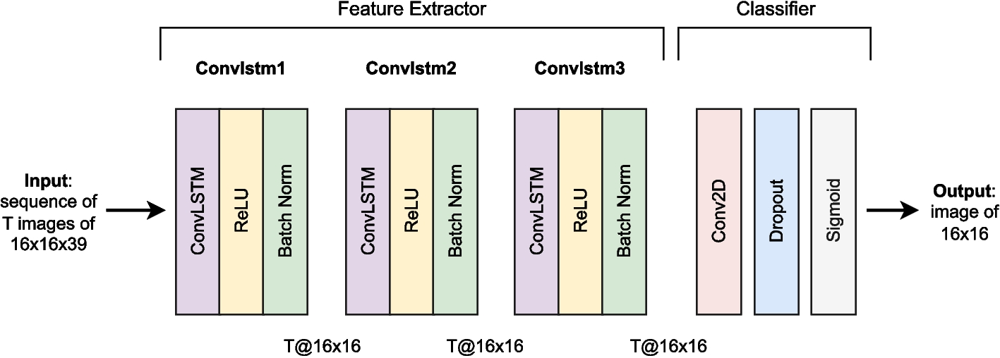

Deep Learning for Crime Forecasting: The Role of Mobility at Fine-grained Spatiotemporal Scales
Abstract
To develop a deep learning framework to evaluate if and how incorporating micro-level mobility features, alongside historical crime and sociodemographic data, enhances predictive performance in crime forecasting at fine-grained spatial and temporal resolutions. We advance the literature on computational methods and crime forecasting by focusing on four U.S. cities (i.e., Baltimore, Chicago, Los Angeles, and Philadelphia). We employ crime incident data obtained from each city’s police department, combined with sociodemographic data from the American Community Survey and human mobility data from Advan, collected from 2019 to 2023. This data is aggregated into grids with equally sized cells of 0.077 sq. miles (0.2 sq. kms) and used to train our deep learning forecasting model, a Convolutional Long Short-Term Memory (ConvLSTM) network, which predicts crime occurrences 12 hours ahead using 14-day and 2-day input sequences. We also compare its performance against three baseline models: logistic regression, random forest, and standard LSTM. Incorporating mobility features improves predictive performance, especially when using shorter input sequences. Noteworthy, however, the best results are obtained when both mobility and sociodemographic features are used together, with our deep learning model achieving the highest recall, precision, and F1 score in all four cities, outperforming alternative methods. With this configuration, longer input sequences enhance predictions for violent crimes, while shorter sequences are more effective for property crimes. These findings underscore the importance of integrating diverse data sources for spatiotemporal crime forecasting, mobility included. They also highlight the advantages (and limits) of deep learning when dealing with fine-grained spatial and temporal scales.
